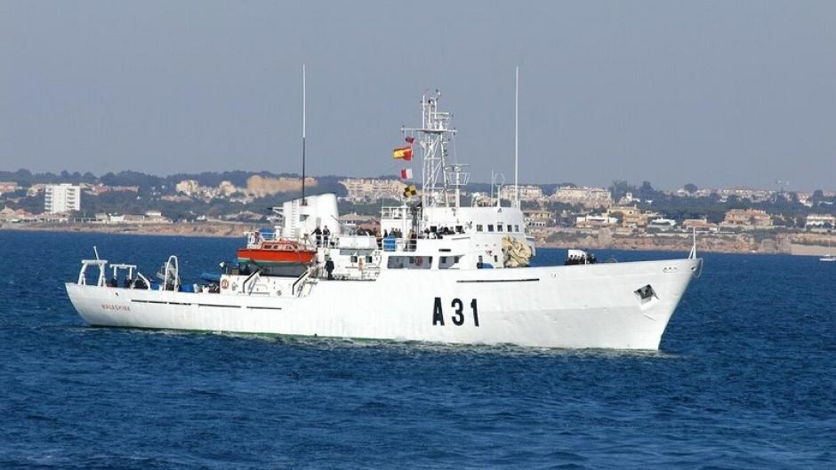
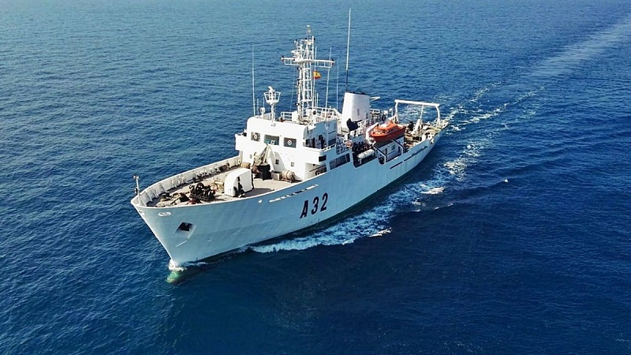
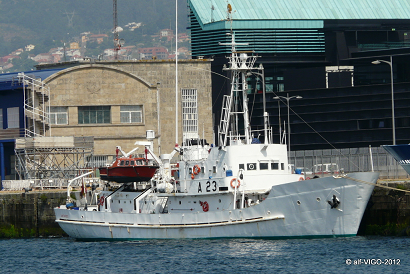
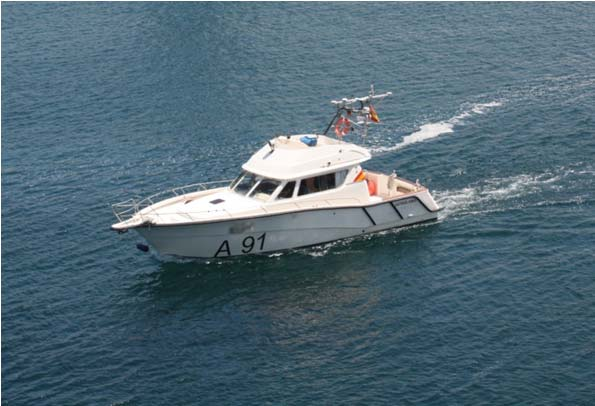
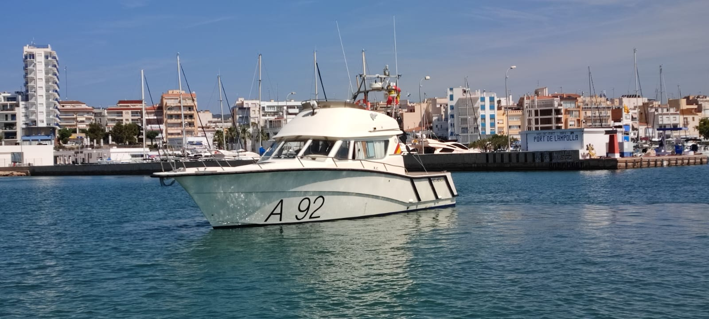
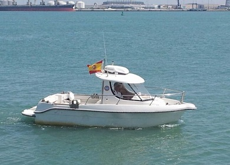

Buques Hidrográficos¶
Los Buques Hidrográficos tienen como principal misión la cartografía naval y el estudio de los fondos marinos, garantizando la seguridad en la navegación y proporcionando datos esenciales para operaciones navales militares y civiles.
Estos buques suelen realizar despliegues de varias semanas a 2-3 meses, dependiendo de la misión. Puden operar en campañas prolongadas de hasta 4-6 meses al año, aunque con rotaciones y escalas en puerto.
En la Armada Española tenemos:
-
Clase Malaspina (A-30) -- San Fernando
- Buque Hidrográfico Malaspina (A-31)
Tiene una dotación de unas 70 personas.

- Buque Hidrográfico Tofiño (A-32)
Tiene una dotación de unas 60 personas.

-
Buque Hidrográfico Antares (A-23) -- Cádiz

-
Lanchas Hidrográficas -- Cádiz
Tienen una dotación de unas 10 personas.
- LHT Astrolabio (A-91)

- LHT Escandallo (A-92)

- LHT Sondaleza (A-93)
